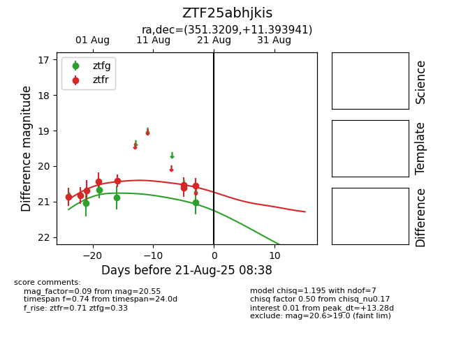

Target ZTF25abhjkis at 2025-08-21 08:38, see:
FINK: fink-portal.org/ZTF25abhjkis
Lasair: lasair-ztf.lsst.ac.uk/objects/ZTF25abhjkis
ALeRCE: alerce.online/object/ZTF25abhjkis
alt names
ZTF25abhjkis (ztf,alerce)
coordinates:
equatorial (ra, dec) = (351.3209,+11.39394)
galactic (l, b) = (91.6183,-46.17384)
photometry
last ztfg=21.02, ztfr=20.55
4 ztfg, 8 ztfr detections
